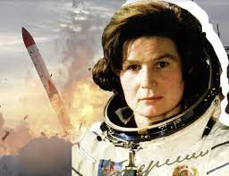

День космонавтики |
Первый полет женщины в космосОписание16 июня 1963 года первая в мире женщина-космонавт Валентина Терешкова совершила одиночный полет в космос. Описание полета Свой космический полёт (первый в мире полёт женщины-космонавта) Валентина Терешкова совершила 16 июня 1963 г. Одновременно на орбите находился космический корабль «Восток-5», пилотируемый космонавтом Валерием Быковским. Терешкова провела на орбите 2 суток 22 ч. 50 мин., совершив 48 витков вокруг Земли и пролетев 1 млн. 971 тыс. км. Полёт Терешкова перенесла тяжело, однако, несмотря на физический дискомфорт, она вела бортовой журнал и делала фотографии горизонта, которые позже были использованы для обнаружения аэрозольных слоёв в атмосфере.Следующий полёт женщины в космос состоялся только через 19 лет; второй женщиной-космонавтом стала Светлана Савицкая. |
Меню |